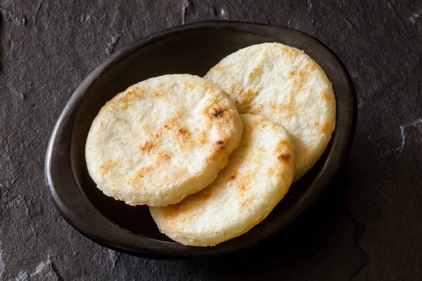

Receta de Arepas
Vea el contenido aqui
Ingredientes para hacer Arepas
Modo de Preparación

Las arepas son un alimento tradicional en algunos países latinoamericanos, donde el maíz es un ingrediente primordial en la dieta básica.
Esta masa, hecha a base de harina de maíz, se cocina usualmente en una plancha amplia y suele prepararse para cocinar tandas de más de una arepa.
Las arepas venezolanas destacan de otras variedades porque su masa es más gruesa, lo que permite rellenarlas con una gran variedad de rellenos.
Ingredientes para hacer Arepas
- 500 gramos de harina de maiz
- 500 militros de agua
- 1 cucharadita de sal
- Queso rebanado tipo paisa
- Mantequilla

Modo de Preparación
- Echa el agua en un bol, añade la cucharadita de sal y disuélvela. Ve agregando la harina precocida de maíz poco a poco. Una vez la hayas echado toda, ve amasando hasta formar una masa homogénea.
- Sigue amasando hasta que te quede completamente integrada. Déjala reposar por unos 5 minutos y retoma el amasado. Si, después de dejarla reposar, la masa está muy líquida o muy seca, añade más harina o agua respectivamente.
- Forma bolitas medianas con la masa, con esta receta te saldrán unas 8 arepas. Comienza a aplanarlas con las palmas de las manos para hacer la forma tradicional de la arepa. Deben quedar de al menos 1 centímetro de grosor.
- Coloca una cucharadita de aceite en una plancha y extiéndelo sobre toda la superficie con ayuda de un papel de cocina. Calienta y lleva las arepas a la plancha. Cocina a fuego bajo hasta que veas que se han endurecido de un lado. Entonces, voltéalas y déjalas dorar por el otro lado.
- Haz un corte en uno de los lados de las arepas y ve cortando a lo largo de toda la circunferencia. Ábrelas y rellénalas con queso y mantequilla. Este paso es opcional, pero puedes meterlas todas al horno por 10 minutos a 170 ºC para que el queso se derrita y las arepas se doren un poco más.
- Sirve tus arepas venezolanas en el desayuno o cena y disfrútalas. No hace falta que las acompañes con nada más que un delicioso jugo de frutas. ¡Buen provecho!